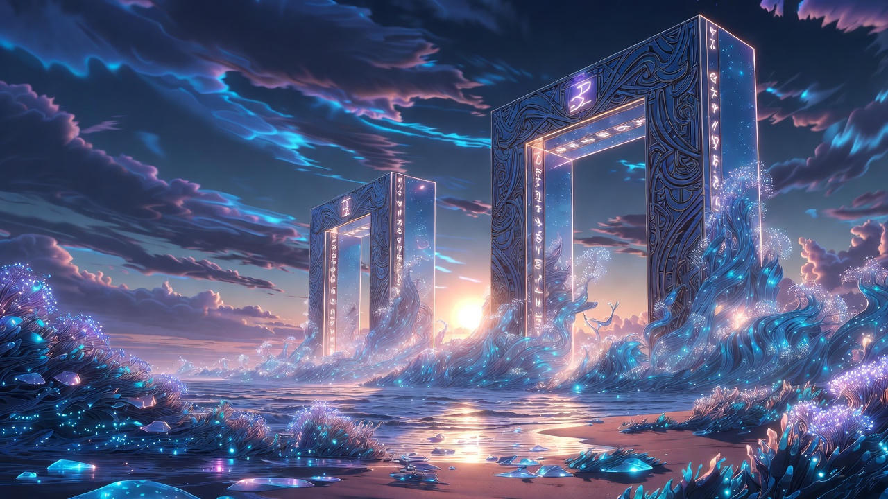
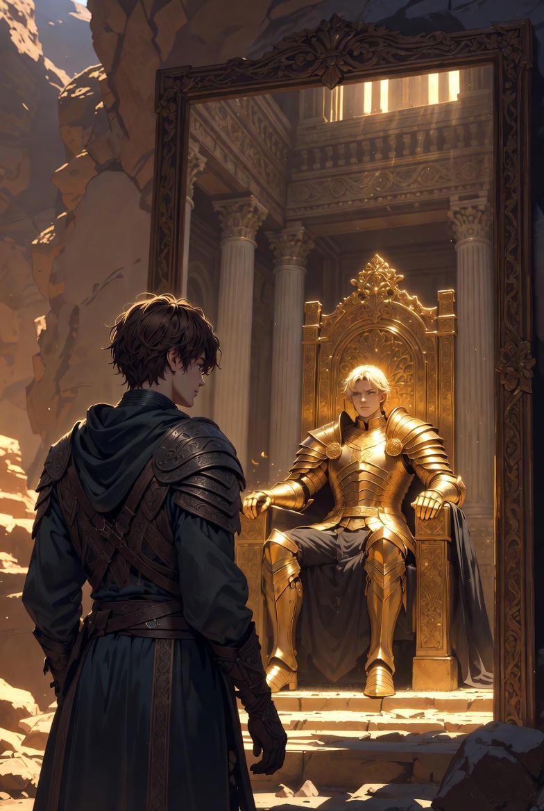
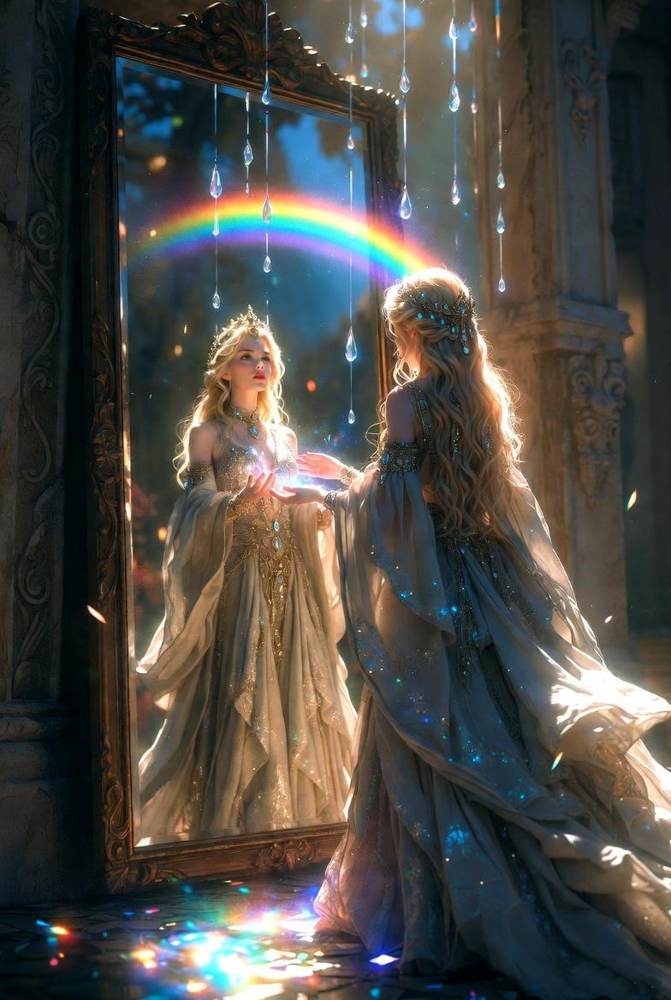
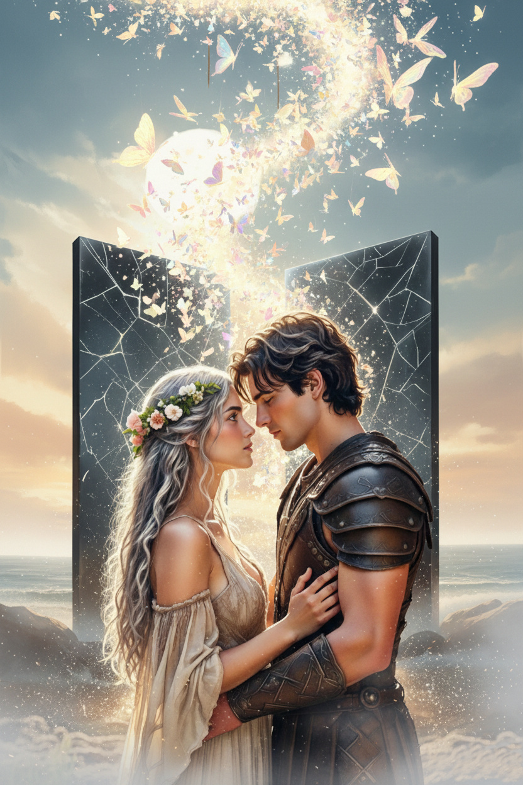

Ajánlom egy kedves barátomnak, aki keresi a pillanatban rejlő örökkévalóságot, és mer hinni a szív órájának szavában.
Az Anima halkan, szinte bűntudattal siklott ki a tejfehér ködből. A hajó teste nem vágta a vizet, inkább csak simogatta az opálos felszínt, mígnem az orra lágyan, tompa puffanással fúródott az Ismeretlen Partok különös homokjába. Egy ideig csak a csend uralkodott, az a fajta sűrű csend, ami a vihar előtt vagy a teremtés után nehezedik a világra.
Alerion elsőként lépett a fedélzet peremére. Megállt egy pillanatra, keze a korlát kopott fafelületén nyugodott, és figyelte, ahogy a ködfátyol lassan fellebben a partról. Honóra szorosan mögötte állt, tündérszárnyai alig észrevehetően remegtek a hűvös, sós párában.
Ahogy a partra léptek, a világ válaszolni kezdett nekik. A talpuk alatt a homokszemek nem csikorogtak a súlyuk alatt, és nem is süppedtek el élettelenül. Ehelyett minden egyes lépés egy-egy kristálytiszta, mélyről jövő dallamot csalt ki a földből. Olyan volt, mintha egy óriási hangszeren járnának. – Hallod? – suttogta Alerion, és megállt. – A sziget emlékezik – felelte Honóra halkabban, mint a szél. – Minden lépésünk egy-egy elfeledett pillanatot idéz fel a világból. Vigyázz, Alerion, itt a földnek füle van, a levegőnek pedig emlékezete.
A parton, pontosan ott, ahol az óceán ezüstös párája és a szárazföld különös, csillámló növényzete találkozott, két hatalmas építmény magasodott. Keret nélküli üvegfalak voltak, de nem tükrözték vissza a lemenő nap halvány fényét. Olyanok voltak, mint két hatalmas, mozdulatlan víztükör, amelyek nem a környezetüket, hanem egy másik valóságot mutatnak be.
– A Jövő Tükrei – suttogta Honóra. A hangja meg-megbicsaklott, ujjai öntudatlanul is Alerion köpenyébe kapaszkodtak. – Tündérként sokat hallottam róluk a vénektől. Azt mondták, ezek a falak nem azt mutatják meg, amit a sorsunk rendelt, hanem azt, amit a vágyaink építenének, ha elég bátrak – vagy elég önzőek – lennénk.
Alerion érezte a hívást. Az első üvegfal nem verte vissza a fáradt arcát, sem a tenger sós permetétől ragacsos haját. Ahogy elé állt, a tükör felülete felizzott.
A tükörben egy másik Alerion nézett vissza rá. Ott, a Távoli Sziklák királyaként, egy hatalmas csarnok trónusán ült. Aranypáncélja olyan vakítóan ragyogott, mintha magából a napból kovácsolták volna. Nem volt rajta por, nem volt rajta seb. Alatta a népe, tízezer torokból zúgta a nevét, és a lábai előtt hevertek az egyesített birodalom zászlói. Ez az Alerion nem ismerte a fáradtságot; a szemei acélkékek voltak és rendíthetetlenek.
– Nézd ezt a rendet, Alerion – szólalt meg a tükörből egy hang. Nem füllel hallotta, hanem a csontjaiban érezte. Ez a saját hangja volt, de hiányzott belőle a kétség minden árnyalata. – Itt nincs többé éhezés az úton. Nincs többé rettegés attól, hogy egy tündér élete elillan, mint a reggeli pára. Itt nem kell védened senkit, mert te magad vagy a védelem. Magányos vagy, igen... de sebezhetetlen.
Alerion keze felemelkedett, hogy megérintse a hűvös üveget. A tükörkép ujjaiban nem volt remegés.
Közben Honóra a saját tükre előtt állt, és a látványtól elállt a lélegzete. Nem vándort látott, akinek sárfoltos a ruhája, hanem az Idő Királynőjét. A tükörben alakja körül megállt a létezés: a lehulló vízcseppek gyémántként függtek a levegőben, a szivárvány íve pedig állandó koronaként ragyogott a feje felett. Minden pillanat, ami valaha volt és valaha lesz, ott lüktetett a tenyerében.
– Miért választanád a mulandóságot? – suttogta neki a saját, éneklő hangja a mélyből. – Itt, a Szivárvány-tó úrnőjeként, egyetlen intéssel megállíthatod a pusztulást. Nem kell többé látnod, ahogy a halandók elsorvadnak melletted. Nem kell félned a búcsútól. Itt te vagy az Örökkévalóság, Honóra. Nincs szükséged egy lovagra, aki logikai feladványokkal próbálja megérteni a te végtelen lelkedet. Itt szabad vagy.
A part éneke ekkorra már fülsiketítővé vált. A homokból feltörő dallamok összefonódtak a tükrök suttogásával, egy kábító, édes altatódallá, ami azt ígérte: elég csak egy lépés, és minden fájdalom megszűnik.
Alerion ujjai már csak centiméterekre voltak a tükör hideg felületétől. A hatalom ígérete úgy lüktetett előtte, mint a láz. De abban a pillanatban, ahogy a tükörkép aranypáncélján megcsillant a fény, Alerion saját, valóságos kezére pillantott.
Látta a körmei alatt maradt fekete kormot, amit még a torony tüze égetett oda. Látta a tenyerén húzódó mély, rücskös heget – a fájdalmas emléket arról a napról, amikor a mérleg golyói közé nyúlt, hogy megmentse Honórát. Ez a seb nem volt szép, nem volt királyi, de igazi volt.
Lassan elfordult a csillogó káprázattól. A lábai nehezek voltak, mintha sárban gázolna, de minden erejét összeszedve Honóra felé nyújtotta a kezét. – Alerion... – Honóra hangja úgy tört meg, mint a vékony jég a tavaszi napfényben. Az arca sápadt volt, szemei az idő végtelenségét fürkészték, de a teste még az élők világa felé hajlott.
– A tükör hazudik, Honóra, még ha az igazat is mondja – jelentette ki Alerion. A hangja most már nem remegett, hanem úgy szólt, mint az üllőn megkonduló kalapács. – Megmutatja, mi lehetnék nélküled, de elhallgatja a legfontosabbat: hogy az a férfi már nem én lennék. Az a király ott bent nem érez semmit. A dicsőség csak egy üres, visszhangzó páncél, ha nincs benne az a szív, ami érted dobban. Miért lennék uralkodó egy olyan világban, ahol nem hallhatom a nevetésedet? Miért választanám a halhatatlanságot, ha azzal pont az életemet ölném meg?
Honóra tekintete lassan kitisztult. A szeméből egyetlen könnycsepp gördült le, ami a dallamos homokra hullva nem tűnt el, hanem tiszta, magas C-hangot adva kristállyá dermedt. Elfordult a ragyogó, magányos trónjától, és két kézzel kapaszkodott Alerion kormos karjába.
– Igazad van – suttogta, és fejét a lovag vállára hajtotta. – Az örökkévalóság csak egy végtelen, aranyozott börtön, ha nincs benne senki, aki emlékeztetne a pillanat értékére. Inkább leszek vándor veled a porban, inkább tűröm el a sors minden viharát, minthogy istennő legyek a csillagok között... nélküled.
Ebben a pillanatban a két tükörfal megremegett. A bennük lévő tökéletes világok megrepedtek, majd egyetlen hatalmas, eget rázó csörömpöléssel ripityára törtek. A szilánkok azonban nem hullottak a földre, hogy megsebezzék őket. Ahogy a levegőbe értek, fénylő szárnyaik nőttek, és az éles üvegdarabok ezer és ezer fehér pillangóvá változtak.
A pillangók serege a sötétedő ég felé emelkedett, spirál alakban örvénylve, bevilágítva az utat, amit eddig eltakart a köd. Az éneklő homok elcsendesedett, s a kábító altatódal helyett a tenger természetes morajlása tért vissza. A dűnék között pedig, ahol eddig csak a semmi ásítozott, egy új, keskeny, de valóságos ösvény tűnt fel.
Alerion és Honóra egymásra néztek. A tekintetükben már nem volt ott a tükrök bizonytalansága. A hajón átélt viták és a parton kiállt kísértés nem szétválasztotta, hanem végleg összefonta őket: a lovagi észt, a tündéri szívet és a közös akaratot. Kéz a kézben indultak meg az ösvényen, befelé az Ismeretlen Partok sűrűjébe.